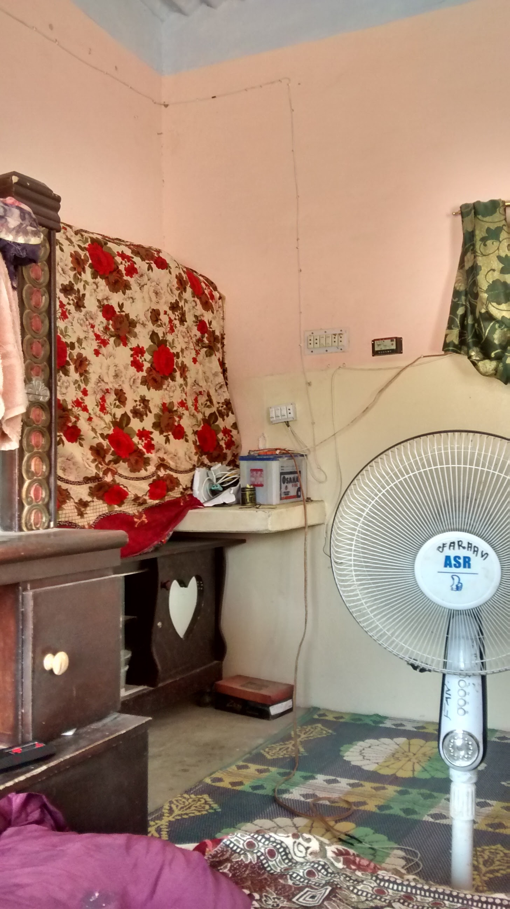
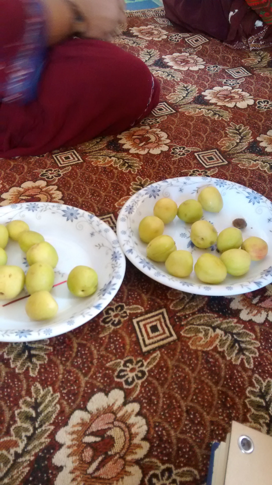
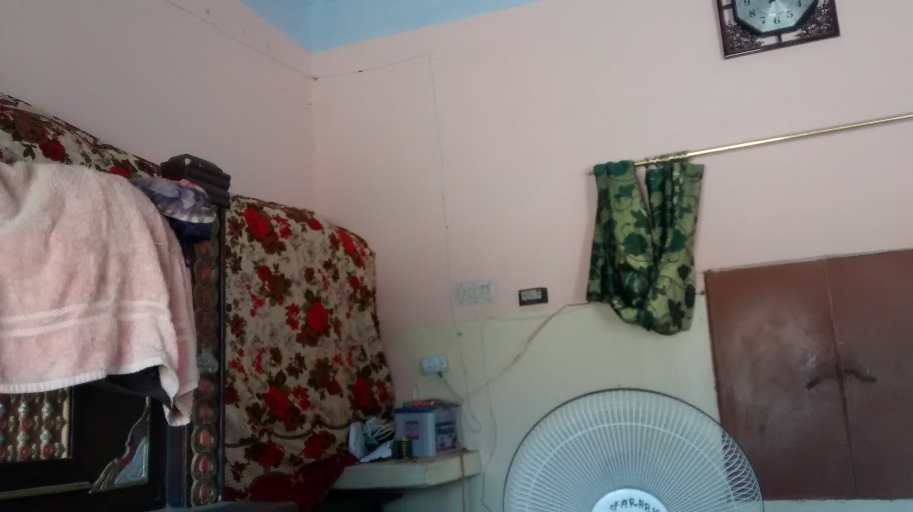

We used to go wherever there was water and pasture for our livestock. And there, we would build our temporary homes. Few months of the year we would always spend at Padaraii Chhab. After the rains, there would be enough water and pasture here to last 3-4 months. The concept of private property that we are forced to go by today, did not exist over here. For us, most important are the common lands of the Pahwaro mountain. It is our whole way of life.
- Din Mohammad